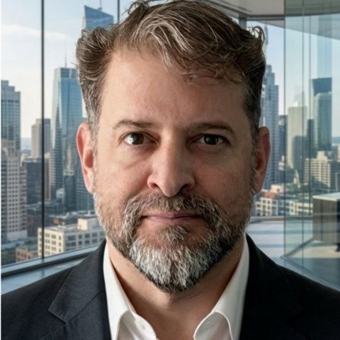

AI now makes decisions inside custodians, banks and exchanges. Regulators, boards and clients all ask the same question: can you prove it is under control? I give firms that proof: AI governance and AI security controls that run every day, across Web2 and Web3, and evidence that earns the trust of shareholders, clients, employees and regulators.
Evidence, not the model.
Banks are saying it too: UOB research finds AI-driven payments will depend less on advances in AI than on how well institutions govern it, with clear accountability and security controls to build trust. Source
Two unrelated approvers for bitcoin purchases. AI agents check every purchase request against the approval policy before it reaches a wallet, confirm the approvers are unrelated, and log who approved what and when.
Institutions hand Astra their assets because they trust that those assets are safe. Astra builds "the regulated infrastructure that allows Asian institutions to hold and custody Bitcoin at scale." Rakkar is one of only two operating SEC-licensed digital asset custodians in Thailand, and Thai bitcoin and ether ETFs must keep their assets with an SEC-regulated custodian. The technology is the tool. What Astra sells is trust, and evidence is how trust is shown. The custodian that proves its trust first wins the mandates.
UOB, the Singapore bank, put it plainly in its October 2026 report, Agentic Finance: Building the foundations for trusted, bounded autonomy: the future of AI-driven payments will depend less on advances in AI than on how effectively institutions govern it, with clear accountability and security controls to build trust. The real question for every firm is how confidently it can govern and trust its AI. Our answer is evidence. That is Evidence by Design: proof built into every system from the first day.
I have designed and reviewed these controls for custodians. Doing it by hand takes a team on a yearly cycle. I run it as three layers, with AI governance and AI security tooling, across Web2 and Web3, in any environment. Tap a layer, or a standard, to see what sits inside.
Months for a large-enterprise risk assessment, with the AI risk systems I built.
Standards and their control catalogues, run as one control set that every mandate reuses.
AI agents run Hashed Works with me. I use the same tooling on every engagement.
"Build once in ASEAN's strictest regime, then travel with it across the Mekong."
Adam Nguyen, Astra, on LinkedIn
I already work across the Mekong, in Savannakhet, and Thailand is where I want to build. Building once to the strictest standard is how I design security: one control set that every new licence and every new country reuses.
I have worked with startups in Silicon Valley since the start of my career, and today across Southeast Asia, most recently in Laos, Singapore, Thailand and Vietnam. So I read a deal the way your investment team does, and I can bring each new business onto one control set from the first day.
Feb 2022 to today
AI systems architecture studio, covering AI governance, AI security and digital assets. Designed and built an agentic AI platform with its own partner protocol; a governed runtime where a local AI layer, a router and a model hub sit in front of frontier and open-weight models; a research assistant brain on a multi-model decision intelligence engine, with an LLM council that stress-tests ideas and plugs the holes in a product strategy; an agent-run career and business operating system; and an evidence engine that proves AI does what it was told. Wrote an 11-layer security and compliance reference architecture for a stablecoin payment network. Built AI risk systems that cut a large-enterprise risk assessment from about 3 months to about 1.
Dear Astra hiring team,
I am applying for the Head of IT Security role.
Evidence, not the model, is how I work. As UOB's October 2026 report on agentic finance puts it, the future of AI-driven payments depends less on advances in AI than on how effectively institutions govern it. The real question is how confidently Astra can govern and trust its AI, and my answer is evidence.
Rakkar is one of only two operating SEC-licensed digital asset custodians in Thailand. Thai bitcoin and ether ETFs must now keep their assets with an SEC-regulated custodian, and as of 22 October no fund manager had filed yet. The custodian that first shows fund managers, banking partners and the SEC audit-ready evidence should win those mandates. Helping custodians, settlement firms and wallet companies build that evidence is my work.
On 13 May your board set clear controls for bitcoin purchases: at least two unrelated approvers, cold wallet and multisig, an Investment Management Committee, and internal audit reporting to the Audit Committee. I have designed and reviewed these controls for custodians. This role makes them run every day and proves them to the auditor and the regulator. For security I work to the NIST Cybersecurity Framework (CSF), NIST SP 800-53 for banks, ISO/IEC 27001, SOC 1 and SOC 2, and CIS Controls v8. For threats: MITRE ATT&CK, and MITRE ATLAS for AI systems. For AI governance: ISO/IEC 42001, the NIST AI Risk Management Framework (AI RMF) and the EU AI Act. One control set maps to every mandate, including the SEC's, so each new licence reuses it and security pays its way: fewer audit findings, faster approvals, more mandates.
What you need right now is to show that you are compliant and that your setup is sound. I already have AI tooling built for this work, and I can show your team how it runs. Standing up SOC 2 or ISO 27001 normally takes months, because the controls are built for the audit. With my tooling the controls run first, every day, and the audit becomes proving what already works, at a pace your current maturity sets. That gets you the answers your auditors, banking partners and the SEC will ask for.
Orbix has KBank behind it. Rakkar will win on product and trust, and that is where I help: what to build, how to secure it, and how to win regulated partners.
At the end of 2020, BRD led a team with Deloitte, IBM and SBI Digital Asset Holdings educating major trade organizations and PayPal, and I led the PayPal education myself. Within six months, PayPal bought one of the first custodians, the security provider Curv. I led the launch of BRD's white-label wallet-as-a-service for protocols, wallets, exchanges, traditional finance, payment processors and enterprises, worked on institutional custody built on MPC and HSMs at Coinbase, and led forensics investigations after stolen digital-asset incidents. Banks I have worked with include BNYM, State Street, HSBC and Citi; at EY I worked directly with Citi's executive team on its retail crypto and custody strategy. At Oracle I founded and grew the North America security consulting practice from 15 to 55 consultants and closed a USD 10M Database Vault sale to the Mexican government.
Today I run Hashed Works, an architecture studio that has worked with customers in Singapore and a government client in Vietnam, and is about to launch in Thailand. I am a US citizen and work remotely. This role would need visa sponsorship and a work permit, and I would gladly commit to a sponsoring employer for at least a year. My salary is negotiable.
Banks, wallets and custody have always existed, but banks only took stablecoins seriously after President Trump signed the GENIUS Act in July 2025. Since the second half of 2025, bank after bank and country after country has wanted its own stablecoin. That is crypto going mainstream in traditional finance, and it is still in its infancy. There has never been a better time to help banks and financial services keep pace with the technology while putting the right governance controls in place to do it safely, and I would welcome the chance to start that discussion with you.
- Ricardo
Google Meet, Signal or WhatsApp on request. The full two-page CV is attached to my application.